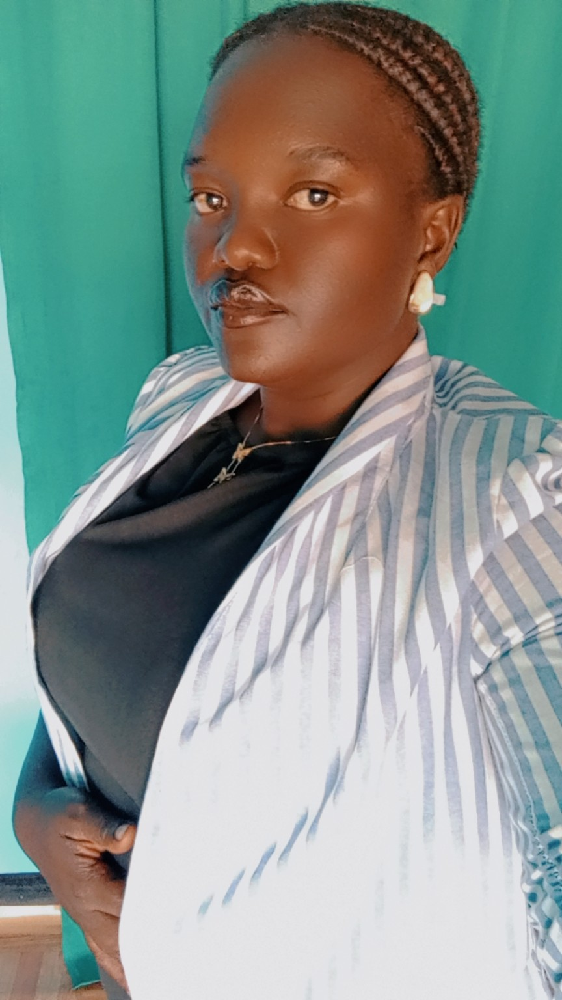
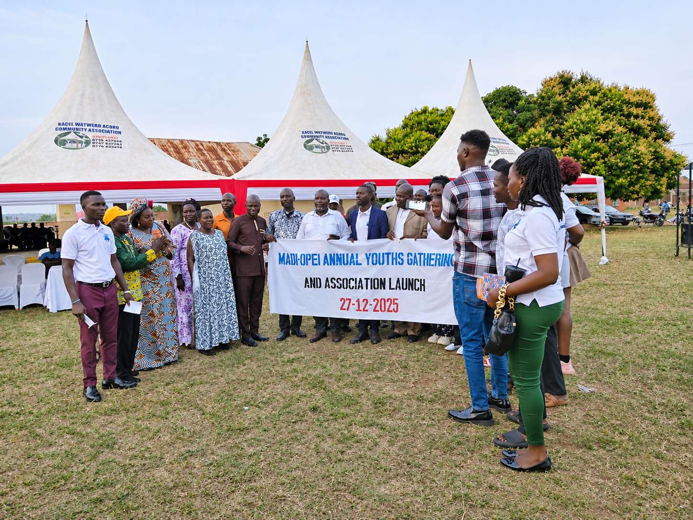
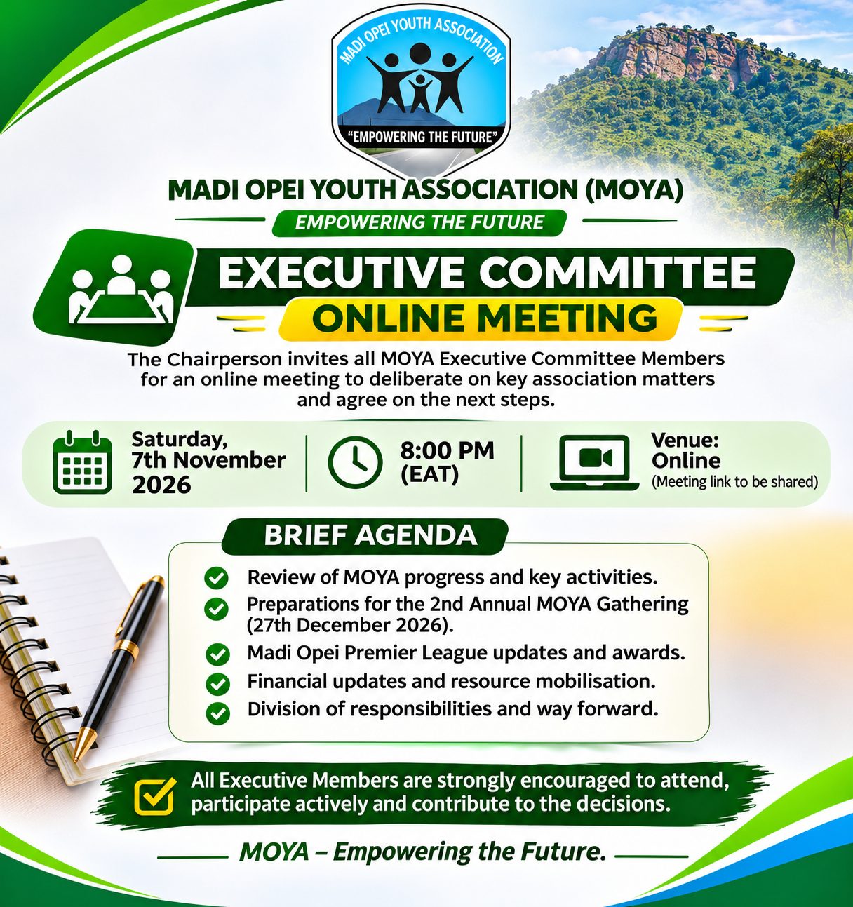

Empowering the Future of Madi Opei
Building a united, peaceful and empowered generation through youth leadership, agriculture, education, mentorship, sports, skills development and community action.
Join the 2026 Annual GatheringAbout Madi Opei Youth Association
Madi Opei Youth Association (MOYA) is a registered community youth association in Madi Opei Town Council, Lamwo District, Uganda. MOYA brings young people together and creates opportunities for positive participation in the development of Madi Opei and surrounding communities.
Our Vision
A united, skilled, responsible and empowered generation actively shaping a peaceful and prosperous community.
Our Mission
To mobilise, empower and connect young people through leadership, education, enterprise, agriculture, sports and community development.
Our Values
Unity, integrity, service, inclusion, accountability, peace, hard work and respect.
Executive Leadership
Meet the MOYA executive team, committed to accountable leadership and service to young people and the wider community.
Rubangakene Philips
Contact: +256 789 813 592

Olak Mercy
Atimango Sicola
Ajalo Gloria
Ojara Henry
Contact: 0783502982
Mentorship and Advisory
MOYA recognises mentorship as an important part of youth growth and responsible leadership.
Jamesson Dennish Onekalit
Contact: +256 774 240 242
Guiding the next generation
Through guidance, lived experience and encouragement, our mentor supports young people to pursue self-discovery, responsible leadership, gratitude, personal growth and service to the community.
Mentorship is distinct from the elected executive offices and strengthens the association through advice and intergenerational guidance.
Messages of Vision and Mentorship
Message from the Chairperson
To the entire youth fraternity of Madi Opei and our neighbouring communities: I warmly welcome you to Madi Opei Youth Association. MOYA belongs to all of us. It is a platform through which we can unite our energy, ideas, skills and determination to shape the future we want to see.
My vision is to see young people become active participants in community transformation—not spectators waiting for change. We must invest in education, practical skills, entrepreneurship, responsible leadership, agriculture, sports and service to our communities. We must create an environment where young people can discover their abilities, support one another and turn ideas into meaningful action.
My roots are in Orogo A Cell, Kal Parish, Madi Opei. That village is part of my identity and a foundation of my journey. But my responsibility as Chairperson reaches beyond my village. I speak to and serve the entire youth community of Madi Opei and surrounding areas, regardless of village, background or circumstance.
We must not only inherit Madi Opei; we must take responsibility for building its future. The transformation of our community cannot be achieved by one person or one village. It requires collective commitment from young people, elders, cultural and community leaders, institutions, government, businesses, development partners and friends of Madi Opei.
I therefore invite every well-wisher and potential partner to walk with us. Your ideas, time, professional expertise, mentorship, networks, materials or financial support can help turn our shared aspirations into practical opportunities. MOYA welcomes sincere collaboration built on transparency, mutual respect and a common desire to improve lives.
Let us choose unity over division, action over excuses, and service over self-interest. Together, we can build a generation that is confident, skilled, peaceful and ready to lead.
Rubangakene Philips
Chairperson, Madi Opei Youth Association
Message from the Mentor
Jamesson Dennish Onekalit
Mentor and Adviser, Madi Opei Youth Association
Dear young people of Madi Opei and our neighbouring communities,
It is a privilege to be part of a journey that seeks to bring our young people together around a shared purpose. The future of Madi Opei is not something that will be built for us by others; it is something we must prepare for and build together, through the choices we make today.
I encourage every young person to believe in their potential. Your background, village, present circumstances or past challenges should not determine the limits of your future. Be willing to learn, ask questions, acquire practical skills and use your talents productively. Education is important, but so are discipline, integrity, patience, hard work and the willingness to keep growing.
Leadership is not simply holding a title or being recognised. True leadership begins with responsibility, humility and service. Let your words be matched by your actions. Respect one another, listen even when you disagree, keep your commitments and make decisions that protect the trust placed in you. Avoid divisions and destructive competition; our community is stronger when we cooperate and give one another room to succeed.
I also urge you to value the wisdom of elders while welcoming new ideas and innovation. Let the young and old work together. Seek mentors, support your peers and, as you make progress, remember to reach back and encourage someone else. Success becomes more meaningful when it creates opportunities for others and contributes to the wellbeing of the community.
MOYA has an important role to play in creating a platform for unity, mentorship, skills development, sports, enterprise and community participation. I encourage the executive, members and all young people to protect this association through transparency, accountability, respect and a spirit of volunteerism. Let our programmes be guided by real needs and let every contribution, however small, be used responsibly.
To our partners, parents, elders, cultural and community leaders, institutions and friends of Madi Opei: your guidance and support are valuable. Continue to walk with the youth, share your knowledge and help create opportunities through which young people can learn, serve and thrive.
Let us be a generation known not only for what we hope to achieve, but for what we are willing to do together. Start where you are, use what you have, keep learning and never underestimate the difference that committed young people can make.
May MOYA remain a platform of unity, purpose and positive transformation for Madi Opei and the generations to come.
Jamesson Dennish Onekalit
Mentor and Adviser, Madi Opei Youth Association
Draft prepared for the website and subject to the Mentor's review and approval before final publication.
Turning Community Ideas into Action
Youth Development
Encouraging education, skills development, mentorship, entrepreneurship, responsible leadership and constructive youth participation.
Agriculture & Food Security
Promoting practical agricultural activities, including cassava growing, sesame (simsim) production and planned coffee production, to strengthen food security and household livelihoods.
Community Service
Supporting initiatives that bring people together, encourage volunteerism and respond to shared community priorities.
Sports & Talent
Creating opportunities for young people to develop talent, build teamwork and celebrate sportsmanship and friendship.
Learning & Awareness
Creating spaces for dialogue, mentorship and awareness on issues affecting young people and families.
Annual Youth Gathering
Bringing the community together to celebrate youth, share ideas, recognise achievements and plan for the future.
Madi Opei Premier League
The Madi Opei Premier League brings together 16 clubs to promote unity, peace, sportsmanship and talent development among young people in Madi Opei and surrounding communities.
MOYA's role is to organise and coordinate the competition for community unity, peace and youth talent development. Clubs, players and families are encouraged to take safety seriously and make appropriate arrangements for player welfare in line with the league's agreed arrangements.
We welcome well-wishers, businesses, organisations, individuals and development partners to support the league through appropriate financial, material or technical contributions. The league champions will be recognised at the MOYA Annual Youth Gathering on 27 December 2026.
MOYA Annual Youth Gathering
The second edition of the Madi Opei Youth Annual Gathering will take place on 27 December 2026. We invite all youth born of Madi Opei, residents, neighbouring communities, elders, leaders, partners and well-wishers to participate.
Community Cleanliness & Sports Gala
Come together for community cleanliness activities and sports as we prepare for the main gathering.
Community Run
Diabetes awareness run from Madi Opei Town Council to Lawiye Oduny, next to the hill site.
Health & Community Activities
Blood donation, community engagement and Wang oo as part of the gathering activities.
Youth Dialogue & Recognition
Guest conversations, community celebration and awarding of the Madi Opei Premier League champions.
Featured speakers and conversations
Sir Gole Andrew
Technology, innovation and the future of young people.
Dr Oyoo Charles Akiya
Mental health, alcohol and drug abuse awareness.
Hon. Sarah Okoo
Youth, family and responsible relationships.
Call to all youth and community members: Let us come together in unity, participation and service to make the second MOYA Annual Youth Gathering a success.
2025 Annual Youth Gathering Gallery
Memories of our first Annual Youth Gathering and Association Launch held on 27 December 2025 in Madi Opei.

MOYA Annual Youth Gathering and Association Launch – 27 December 2025
Partner With MOYA
MOYA welcomes development organisations, NGOs, CBOs, government institutions, private companies, educational institutions, philanthropists and individuals who share our commitment to youth empowerment and community transformation.
What you can support
- Youth skills and mentorship
- Agriculture and food security
- Sports and talent development
- Education and leadership
- Community peace and unity
Every contribution matters
Support can take the form of funding, equipment, training, professional expertise, mentorship, networks, materials or volunteering. We value partnerships that are transparent, respectful and focused on lasting impact.
Let us work together to empower the future.
Contact MOYA
For membership, collaboration, mentorship, programme information and partnership enquiries, reach out to the association.
MOYA Online Meetings
Official meetings, announcements and virtual engagements.
Executive Committee Online Meeting
Saturday, 7th November 2026
Time: 8:00 PM (EAT)
Venue: Google Meet

Brief Agenda
1. Review of MOYA progress and activities.
2. Annual gathering preparations.
3. Premier League updates and awards.
4. Financial updates and mobilisation.
5. Executive responsibilities and way forward.
JOIN MEETING